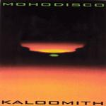

Home Artist links

Mohodisco - Kaloomith
| Artist: | Mohodisco |
| Title: | Kaloomith |
| Label: | self produced |
| Length(s): | 43 minutes |
| Year(s) of release: | 2002 |
| Month of review: | [10/2002] |
Line up
Bruce White - guitar, synth, bass,
Mark Cobb - drums on 1, 2
Brian Leonard - bass on 1
Tim Egan - opening bass on 2
Holmes - 2nd synth solo on 3, opening synth riff on 6
Kate Jenkins - bass on 3
Adam Stockton - opening drum beat on 4
Jim Wert - didgeridoo on 5, percussion on 5
Brad Wegner - bass on 6
Scott Edwards - drums on 6
Mike Fiorentino - electric violin on 6
Andre Stoeckley - synth solo on 6
David Cook - opening bass riff on 8, percussion on 8
Harry DeCourcy - percussion on 8
Tracks
| 1) | Praxis | 4.07
|
| 2) | Our Paths Are Sonic Waves | 5.42
|
| 3) | Gravity | 4.31
|
| 4) | Remote Viewer | 5.41
|
| 5) | Soft And Sharp | 4.49
|
| 6) | The Source | 5.41
|
| 7) | Mystery Falls | 7.18
|
| 8) | Kaloomith | 5.10
|
Summary
Bruce White with a lot of his friends (to save me from RSI please invite
less people over next time, Bruce, please?).
The music
We take off with a swirly start in Praxis. The song has an easy going gait
and reminds me a lot of Ozric Tentacles. In view of the fact that
Bruce White told me beforehand that his music was progressive in a somewhat
modern way, this is not so surprising. Of course, the Ozrics go back to
Gong themselves, but it is not the psyche feel, but the neo side of neo-psyche
that is mostly felt here. The production is rather bare and the drums could
have done with a bit more variation. The guitar speaks a few hefty words to
compensate.
On Our Paths Are Sonic Waves, again a lots of sound, and the keyboards going for
the cosmic this time. The guitar is being active again, the bass is a lot lazier
(ie. towards the end). Samples and a danceable beat make for a modern feel.
Reversed percussion and automatic sounding drums on Gravity. Although the
comparison with the Ozrics is still apparent, it seems to me Mohodisco is
a lot less organic, and this is what I like about the Ozrics (their melodies
are also fine). On this track, we have some overrepetition and the music
is more electronic and easy-going.
Remote Viewer is claustrophobic with a Blade Runner feel and choirs singing.
Maybe some Bjorn Lynne on his more cosmic records in here as well.
The didgeridoo comes in on Soft And Sharp with additionally some minimal
influences in the line of Riley and Mother Mallard Portable Masterpiece Co.
We go the way of gurgles again on The Source, rich in sound and with strong
riffing. Mystery Falls is also a strong track with a furious guitar solo
in the first part. After some doubled guitar and wah-wah keyboards (I can't
help it), the remainder is quite relaxed. Title track Kaloomith is the groovy
closer.
Conclusion
Compared to the Ozrics, Mohodisco could improve a bit on the dynamics in the
music, but the music is certainly not bad, and if you take the later tracks
on the album as a measure, they are at least a bit more varied than the
neo-psyche heroes. I hope the level of variation stays, and is maybe extended
even a bit more. As regards production, I hope things are a bit more livelier
on the next one. The dance influences are there, but the band never strays too
far so that is, at least for some, a relief.
© Jurriaan Hage